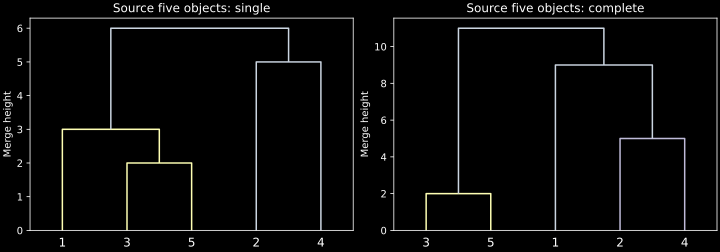
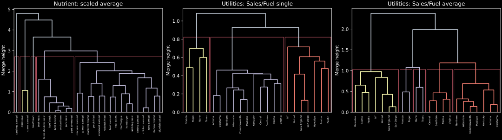
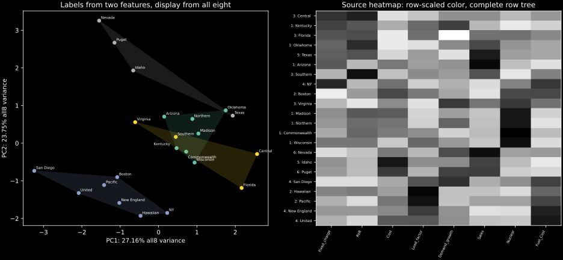
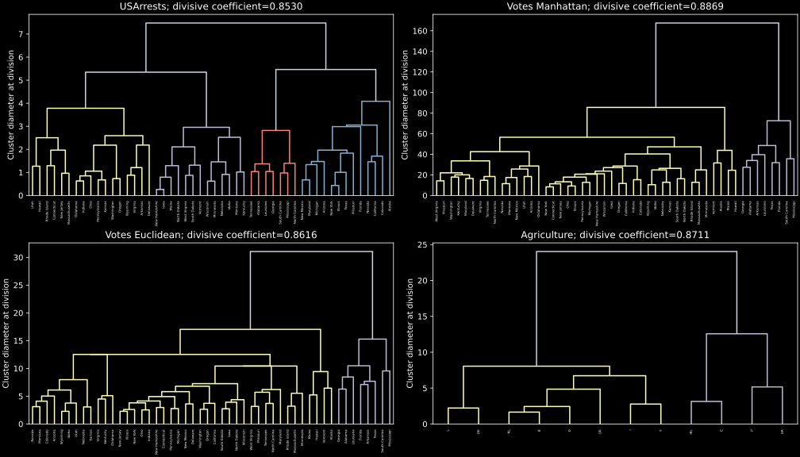

IIT Hyderabad · NPTEL · Independent study edition
Ward clustering, dendrograms, and reproducible implementations
5.1 Reading the source's five-object hierarchies
A dendrogram records a nested sequence of groups and the comparison value at each merge or division. Its vertical coordinate is not a universal measure of scientific similarity. It must be interpreted through the linkage or splitting criterion that generated the tree. The horizontal leaf order can change when a branch is reversed without changing a single membership.
The source's first numerical example supplies the symmetric dissimilarity matrix
$$\mathbf{D}=\begin{pmatrix}0&9&3&6&11\\9&0&7&5&10\\3&7&0&9&2\\6&5&9&0&8\\11&10&2&8&0\end{pmatrix}. \tag{5.1}$$Selected handwritten frames confirm its entries, including $D_{34}=9$. The matrix is a valid nonnegative symmetric dissimilarity with zero diagonal, but it is not a metric: $D_{15}=11$ exceeds $D_{13}+D_{35}=5$. Single and complete linkage can still analyze it as a dissimilarity matrix. A Euclidean geometric interpretation would require additional evidence.
Single linkage first joins objects three and five at height two. The distance from that group to object one is $\min(3,11)=3$, so object one joins next. Objects two and four merge at height five, and the final two groups merge at height six. The successive heights are therefore $2,3,5,6$. A two-group cut yields $\{1,3,5\}$ and $\{2,4\}$.
Complete linkage also begins with three and five at height two. It then joins two and four at height five. Object one is at complete-link distance nine from that group and eleven from the other, so it joins $\{2,4\}$ next. The final height is eleven. A two-group cut therefore gives $\{1,2,4\}$ and $\{3,5\}$. The source's intermediate verbal calculation of the distance from object four to $\{3,5\}$ is inconsistent with the displayed matrix: the maximum of nine and eight is nine. Correcting that slip leaves the stated merge sequence unchanged.

For a monotone hierarchy, cutting at a height merges all branches whose relevant joins are at or below that threshold. Cutting for a specified number of groups instead follows the merge sequence until that number remains. Tied heights can make these operations differ: a horizontal threshold may cross several simultaneous joins. The laboratory uses an explicit fixed-group cut and compares partitions independently of their arbitrary label numbers.
Source calculation: single linkage, 0:53 and complete linkage, 15:17. The matrix and the separate divisive example were checked against selected source frames.
5.2 Ward's criterion measures the cost of a merge
A useful extension compares two groups through the increase in squared-error distortion caused by representing their union by one centroid. For a nonempty set $A$ of numerical observations, let $\boldsymbol\mu_A$ be its arithmetic centroid and define $W(A)=\sum_{i\in A}\|\mathbf{x}_i-\boldsymbol\mu_A\|^2$. Ward's criterion chooses a merge with the smallest increase $W(A\cup B)-W(A)-W(B)$.
The union centroid is $(|A|\boldsymbol\mu_A+|B|\boldsymbol\mu_B)/(|A|+|B|)$. For the points of $A$, expand each difference from that union centroid as $(\mathbf{x}_i-\boldsymbol\mu_A)+(\boldsymbol\mu_A-\boldsymbol\mu_{A\cup B})$. The cross term sums to zero because deviations from an arithmetic mean sum to zero. The squared-error contribution becomes $W(A)+|A|\|\boldsymbol\mu_A-\boldsymbol\mu_{A\cup B}\|^2$. Repeat for $B$. Substitute the union centroid into the two remaining terms and collect their common squared centroid difference; the coefficient reduces to $|A||B|/(|A|+|B|)$. ∎
This increment includes both centroid separation and group sizes. Simply choosing the closest centroids is therefore a different rule. The conventional Ward dendrogram height used by SciPy and R's ward.D2 corresponds to $\sqrt{2\Delta W}$ for Euclidean inputs. For singleton groups, it reduces to their original Euclidean distance. R's older ward.D convention is different and must not be silently substituted.
The laboratory checks the squared-error identity on the source Utilities numerical features and separately compares the complete Ward cophenetic matrix with a fresh R ward.D2 calculation. This extension is intentionally applied to Euclidean observations, not to the nonmetric matrix (5.1). Squared-error geometry cannot be asserted for an arbitrary supplied dissimilarity merely by selecting a method named Ward.
This section is an authored extension. Conventions verified in R hclust and SciPy linkage.
5.3 DIANA divides a group through a splinter
The source's divisive example begins with observations $A,B,C,D,E$ together. DIANA, short for divisive analysis, chooses a current cluster with the largest diameter, the largest dissimilarity between any two of its members. It starts a new splinter group with the observation having the largest average dissimilarity to the other members. It then considers transferring more observations from the remaining party to that splinter.
For an observation $i$ still in a party $P$, let $a_i$ be its average dissimilarity to the other members of $P$, excluding itself. Let $b_i$ be its average dissimilarity to the current splinter $S$. The largest positive contrast $a_i-b_i$ identifies the next transfer. Recompute the averages after each transfer, and stop when no positive contrast remains or only one party member remains. This produces two nonempty groups. Repeating the largest-diameter division creates a complete nested hierarchy.
The source's five-observation divisive matrix has row totals $84,73,65,89,91$, so $E$ starts the first splinter. Observation $D$ then has average dissimilarity $(32+25+23)/3$ to the remaining party, but dissimilarity nine to $E$. It moves to the splinter. The remaining party is $\{A,B,C\}$; its within-party averages are $10.5,10.5,9$, while its averages to $\{D,E\}$ are $31.5,26,23.5$. Every transfer contrast is now negative. The first stable division is therefore $\{A,B,C\}$ and $\{D,E\}$, as the laboratory verifies from the inspected source matrix.
Software preprocessing is particularly consequential here. In cluster::diana(...,stand=TRUE), standardization subtracts a feature's mean and divides by its mean absolute deviation from that mean. It does not divide by its sample standard deviation. The source uses this option for both the arrest and voting examples. Python implements that exact convention. Missing feature values in the voting table are handled through pairwise available comparisons with the same full-dimension rescaling used by the source dissimilarity calculation.
The divisive coefficient summarizes the tree through the diameter of the last cluster containing each observation before it becomes a singleton. If these diameters are $d_i$ and the full-data diameter is $D>0$, the coefficient is $1-n^{-1}\sum_i d_i/D$. The Python implementation agrees with the R coefficient and the full cophenetic matrix, whose $(i,j)$ entry is the height of their lowest common ancestor, equivalently the last cluster containing both observations before a divisive split separates them. This coefficient describes a hierarchy; it is not a probability that its clusters are genuine population classes.
Source algorithm and numerical split: 25:14. The literal Python helper is ch05_diana.py; standardization and splitting conventions were checked against the primary DIANA documentation.
5.4 Nutrient data: a cut is a decision
The first R demonstration uses the 27-by-five flexclust::nutrient dataset. Its columns are energy, protein, fat, calcium, and iron for different foods. The canonical package data are bundled in CSV form. The source first computes raw Euclidean distances, then subtracts column means and divides by sample standard deviations before recomputing distances and fitting average linkage. Python reproduces both distance matrices and the complete average-linkage cophenetic matrix against a fresh R reference.
The manual five-group cut gives group sizes $7,16,1,2,1$ under first-occurrence label numbering. Raw and standardized within-group medians are computed separately, preserving the source's aggregate(...,median) demonstrations. A raw median has the original measurement units; its standardized counterpart expresses a position relative to the full-data mean and sample standard deviation. The two summaries serve different interpretations even though they describe the same membership.

The displayed NbClust call requests Euclidean average linkage for candidate counts two through fifteen and leaves its index argument at the default multi-index setting. That requests 26 criteria. It is not a request for one elbow curve or one silhouette calculation. In the fresh R reference, four criteria each recommend two, three, five, and fifteen groups: the largest vote count is tied. The package's reported selection of two resolves that tie by its convention; it is not a unique majority. The separate manual choice of five groups should remain distinguishable from this reported choice.
The exact multi-index calculation is converted in ch05_nbclust.py. Its complete index tables, critical values, recommendations, and chosen partition match fresh R references for the nutrient data and a second independent fixture after the source's rounding. The comparison record states that scope. Its vote and Dindex plots reproduce the requested diagnostic quantities rather than substituting an elbow or silhouette curve. The recording also produces plotting warnings and an error in one barplot annotation; correcting a display call does not resolve the tied recommendations.

Source examples: nutrient data, 1:16, scaling and average linkage, 6:55, and the multi-index calculation, 12:58.
5.5 Utilities: separate the clustering space from the display space
The source's Utilities table contains 22 companies and eight numerical features. Its named company column becomes row labels. The code standardizes all eight measurements, but then computes Euclidean clustering distances from columns six and eight only: Sales and Fuel_Cost. That column selection is part of the example. Clustering on all eight standardized variables would answer a different question even if a plotting call happened to produce a similar-looking figure.
Python reproduces single- and average-linkage trees, requested fixed-count cuts, colored membership displays, and group listings. A fresh R reference verifies the full pairwise cophenetic matrix for each hierarchy and partition agreement for a four-group cut. A tree's drawing can reverse individual branches; exact horizontal positions and color names are not statistical invariants.
The source's four-group scatter display passes all eight variables to a PCA visualization while using membership determined from two variables. Python follows the same separation. The first two display components explain approximately $27.16\%$ and $23.75\%$ of all-eight-variable standardized variation. Separation or overlap in this plot is therefore not a complete depiction of the two-variable clustering geometry. Its convex hulls summarize projected group points and do not establish a probabilistic boundary.

The heatmap has another independent operation. The source supplies all eight standardized numerical columns to heatmap, keeps the column order with Colv=NA, and uses a complete-linkage row hierarchy. The default heatmap color scaling then centers and standardizes each row for display. These rowwise colors are not the original Euclidean distance matrix and do not define the earlier two-feature average-linkage groups. The converted full heatmap with its row tree preserves that distinction. Its row labels include the source's six-group average-linkage memberships as an annotation.

Source code and outputs: Utilities input and column selection, 14:47; PCA cluster display, 18:24; heatmap, 19:15. Default color scaling and independent tree construction are documented in R heatmap.
5.6 Divisive examples and distinct splitting algorithms
The source next fits standardized DIANA to USArrests, then to votes.repub with Manhattan distance and mean-absolute-deviation standardization. Python retains the voting table's missing historical entries and reproduces the source distance convention. It obtains divisive coefficient $0.88691817$ for the Manhattan voting tree. Its two groups contain eight and 42 states, matching the source group listing. The standardized Euclidean version produces the same two-group partition for this table, although its complete hierarchy and coefficient differ. That agreement is an observed result for this dataset, not a metric-invariance theorem.
The agriculture take-home example is also included. Fresh R checks of all four DIANA variants—arrests, Manhattan votes, Euclidean votes, and agriculture—compare their complete distance matrices, cophenetic matrices, two-group partitions, and divisive coefficients. All numerical comparisons pass the recorded tolerances. The executable main laboratory and DIANA helper require no R runtime.


The final source script uses a different package, clustlearn, on its supplied two-dimensional demonstration datasets. Its divisive_clustering(...,max_iterations=5) helper repeatedly bisects groups by a bounded-iteration two-means procedure. It is not DIANA. Its height convention also differs: it records a square-root parent squared-error quantity rather than DIANA's diameter. The dedicated Python conversion is ch05_clusterlearn.py, with all six original demonstration datasets bundled. Its separate comparison record states how reference initialization is replayed to distinguish algorithm agreement from unrelated random starts.
These examples illustrate three distinct decisions: the dissimilarity or feature geometry, the hierarchy construction, and the cut or display. None can be inferred reliably from a function's general label “hierarchical.” Source-code arguments and their defaults are part of the statistical specification.
Source demonstrations: arrest DIANA, 20:33; voting example, 23:06; agriculture and the separate toy helper, 25:07. Independent numeric evidence: DIANA comparisons and agglomerative comparisons.
5.7 Exercises with worked solutions
A source-matrix audit. Recalculate the distance between object four and cluster $\{3,5\}$ in (5.1) for both single and complete linkage. Does the resulting difference change the reported two-group complete-linkage partition?
Worked solution
The relevant dissimilarities are nine and eight. Single linkage gives eight; complete linkage gives nine. The smallest remaining complete-linkage merge after joining three and five is still the two–four pair at five. Object one then joins that group at nine, so the final two groups remain $\{1,2,4\}$ and $\{3,5\}$. A corrected intermediate calculation can therefore leave the final partition unchanged while remaining necessary for an accurate derivation.
Ward's domain. Why is it invalid to claim squared-error Ward geometry for (5.1) solely because the matrix is symmetric? State a condition that makes the centroid derivation applicable.
Worked solution
Symmetry and nonnegative entries do not show that distances arise from Euclidean coordinate differences. Here the triangle inequality already fails because eleven exceeds three plus two. The derivation requires actual observations in a Euclidean inner-product space, with arithmetic centroids and squared norms. On such coordinates (5.2) follows by centering and expanding sums of squares. A routine accepting arbitrary numbers does not establish those prerequisites.
Divisive transfer. After $E$ starts the source splinter, explain why $D$ transfers. Recheck the decision after the split becomes $\{A,B,C\}$ and $\{D,E\}$.
Worked solution
Observation $D$ is on average $(32+25+23)/3$ from its party but only nine from the splinter, so moving it has a positive contrast. Afterward the three party members have within-party averages $10.5,10.5,9$ and cross-splinter averages $31.5,26,23.5$. Their contrasts are all negative, so none transfers. The averages exclude the observation itself; including its zero self-distance would change the criterion.
One option, two scaling formulas. Explain why replacing
diana(...,stand=TRUE)by column sample-standard-deviation scaling is not a literal conversion. How can a programmer verify that a translation uses the intended convention?Worked solution
The DIANA option uses the mean absolute deviation about the column mean. The scale denominator differs from a sample standard deviation and need not differ by the same ratio across columns. Therefore the relative contributions to distance can change. Inspect the primary function documentation and compare complete dissimilarity matrices on the same original data. This project's fresh R comparisons test the full matrices, rather than relying on a similar final picture.
Multiple answers on one table. The source uses two Utilities variables for clustering, all eight for PCA display, and row-standardized colors in a heatmap. State which evidence is needed before calling visual overlap a clustering failure.
Worked solution
First recover the actual feature subset and distance used for the labels. Then inspect that geometry or the full fitted objective, not only the two-dimensional projection of another feature space. The heatmap's rowwise colors encode relative feature levels and supply no direct pairwise-distance test. A projected overlap can result from information lost by display or from differences between the display and clustering spaces. It does not by itself refute the two-feature hierarchy.
Algorithm and group-count claims. Explain why neither the multi-index selection of two groups nor agreement of two voting cuts establishes a unique population clustering. Why must the final
clustlearnexamples be checked independently of DIANA?Worked solution
The fresh multi-index reference has a four-way tie in its largest recommendation count, so the selected two groups follow a tie convention. The voting distance choices happen to agree at a two-group cut but differ elsewhere in their trees. Neither finding is a population-identification theorem. The toy helper uses repeated two-means bisections and a squared-error height convention; DIANA uses a splinter-distance rule and diameter heights. Correctly translating one algorithm gives no automatic evidence that the other has been translated.
Python laboratory
Run labs/ch05.py from the course folder.
Data and figure paths, when used, are resolved by the program. Dependencies are listed in
requirements.txt.
Supporting modules: ch05_clusterlearn.py · ch05_diana.py · ch05_nbclust.py.
Complete runnable Python source
"""Source hierarchical examples: agglomeration, Ward, and literal DIANA."""
from pathlib import Path
import numpy as np
import pandas as pd
from scipy.cluster.hierarchy import cophenet, cut_tree, dendrogram, linkage
from scipy.spatial.distance import pdist, squareform
from ch05_diana import diana, diana_from_data
from ch05_nbclust import nbclust_average
DATA = Path(__file__).resolve().parent / "data"
ROOT = DATA.parents[1]
def standardize(data):
values = np.asarray(data, dtype=float)
return (values - values.mean(axis=0)) / values.std(axis=0, ddof=1)
def canonical_labels(labels):
"""Number groups by first occurrence; preserve the partition."""
mapping = {}
return np.array(
[mapping.setdefault(int(x), len(mapping) + 1) for x in labels]
)
def cut(links, count):
return canonical_labels(cut_tree(links, n_clusters=count).ravel())
def plot_nbclust(result):
"""Render all 26 index votes and Dindex diagnostics."""
import matplotlib
matplotlib.use("Agg")
import matplotlib.pyplot as plt
plt.style.use("dark_background")
figure, axes = plt.subplots(
1, 3, figsize=(13, 3.8), constrained_layout=True
)
votes = result["votes"]
axes[0].bar(list(votes), list(votes.values()), color="#6ee7d8")
axes[0].set(
xlabel="Recommended cluster count",
ylabel="Number of criteria",
title="Four tied pluralities, not a unique majority",
)
index = result["raw_indices"]["Dindex"]
axes[1].plot(index.index, index, "o-", color="#fb7185")
axes[1].set(
xlabel="Candidate clusters",
ylabel="Dindex",
title="Literal NbClust Dindex curve",
)
axes[2].plot(
index.index[1:-1],
np.diff(index.to_numpy(), n=2),
"o-",
color="#c4b5fd",
)
axes[2].set(
xlabel="Candidate clusters",
ylabel="Second difference",
title="Dindex second differences",
)
figure.savefig(ROOT / "assets/ch05-nbclust.svg", metadata={"Date": None})
plt.close(figure)
def plot_examples(manual, nutrient, utilities, scaled, links, diana_results):
"""Convert source trees, cuts, projection, heatmap and banner."""
import matplotlib
matplotlib.use("Agg")
import matplotlib.pyplot as plt
from matplotlib.patches import Rectangle
from scipy.spatial import ConvexHull
plt.style.use("dark_background")
figure, axes = plt.subplots(
1, 2, figsize=(10, 3.5), constrained_layout=True
)
for axis, method in zip(axes, ["single", "complete"]):
dendrogram(
linkage(squareform(manual), method=method),
labels=["1", "2", "3", "4", "5"],
ax=axis,
above_threshold_color="#cbd5e1",
)
axis.set(title=f"Source five objects: {method}", ylabel="Merge height")
figure.savefig(ROOT / "assets/ch05-manual.svg", metadata={"Date": None})
plt.close(figure)
figure, axes = plt.subplots(
1, 3, figsize=(15, 4.2), constrained_layout=True
)
for axis, name, table, tree in [
(axes[0], "Nutrient: scaled average", nutrient, links["nutrient"]),
(axes[1], "Utilities: Sales/Fuel single", utilities, links["single"]),
(
axes[2],
"Utilities: Sales/Fuel average",
utilities,
links["average"],
),
]:
displayed = dendrogram(
tree,
labels=list(table.index),
leaf_rotation=90,
leaf_font_size=5,
ax=axis,
above_threshold_color="#cbd5e1",
)
count = 5 if name.startswith("Nutrient") or "average" in name else 3
labels = cut(tree, count)
positions = {
index: 5 + 10 * j for j, index in enumerate(displayed["leaves"])
}
low, high = tree[-count, 2], tree[-count + 1, 2]
height = (low + high) / 2
for group in range(1, count + 1):
locations = [positions[i] for i in np.flatnonzero(labels == group)]
axis.add_patch(
Rectangle(
(min(locations) - 4, 0),
max(locations) - min(locations) + 8,
height,
fill=False,
edgecolor="#fb7185",
linewidth=0.7,
)
)
axis.set(title=name, ylabel="Merge height")
figure.savefig(
ROOT / "assets/ch05-agglomerative.svg", metadata={"Date": None}
)
plt.close(figure)
figure, axes = plt.subplots(1, 2, figsize=(13, 6), constrained_layout=True)
_, singular, right = np.linalg.svd(scaled, full_matrices=False)
projected = scaled @ right[:2].T
labels = cut(links["average"], 4)
axes[0].scatter(*projected.T, c=labels, cmap="Set2", s=30)
palette = plt.get_cmap("Set2")
for group in range(1, 5):
members = projected[labels == group]
if len(members) >= 3:
hull = ConvexHull(members)
axes[0].fill(
*members[hull.vertices].T,
alpha=0.15,
color=palette((group - 1) / 3),
)
for i, name in enumerate(utilities.index):
offset = {
"Commonwealth": (3, -11),
"Kentucky": (-38, 5),
"Central": (-35, 4),
}.get(name, (3, 3))
axes[0].annotate(
name,
projected[i],
xytext=offset,
textcoords="offset points",
fontsize=6,
)
fractions = singular**2 / np.sum(singular**2)
axes[0].set(
xlabel=f"PC1: {100 * fractions[0]:.2f}% all8 variance",
ylabel=f"PC2: {100 * fractions[1]:.2f}% all8 variance",
title="Labels from two features, display from all eight",
)
heatmap_tree = linkage(pdist(scaled), method="complete")
row_order = dendrogram(heatmap_tree, no_plot=True)["leaves"]
row_centered = scaled - scaled.mean(axis=1, keepdims=True)
colors = row_centered / scaled.std(axis=1, ddof=1, keepdims=True)
axes[1].imshow(colors[row_order], aspect="auto", cmap="gray_r")
axes[1].set_xticks(
np.arange(len(utilities.columns)),
utilities.columns,
rotation=65,
ha="right",
fontsize=6,
)
labels6 = cut(links["average"], 6)
heat_labels = [f"{labels6[i]}: {utilities.index[i]}" for i in row_order]
axes[1].set_yticks(np.arange(len(row_order)), heat_labels, fontsize=6)
axes[1].set_title("Source heatmap: row-scaled color, complete row tree")
figure.savefig(
ROOT / "assets/ch05-utilities-display.svg", metadata={"Date": None}
)
figure.savefig(
ROOT / "validation/chapters/ch05-utilities-figure.png", dpi=130
)
plt.close(figure)
figure = plt.figure(figsize=(11, 7), constrained_layout=True)
grid = figure.add_gridspec(1, 3, width_ratios=[1.5, 6, 0.25])
tree_axis = figure.add_subplot(grid[0])
dendrogram(
heatmap_tree,
orientation="left",
no_labels=True,
ax=tree_axis,
above_threshold_color="#cbd5e1",
)
tree_axis.set(xlabel="Complete-link height", yticks=[])
image_axis = figure.add_subplot(grid[1])
image = image_axis.imshow(
colors[row_order],
origin="lower",
aspect="auto",
extent=(-0.5, len(utilities.columns) - 0.5, 0, 10 * len(utilities)),
cmap="gray_r",
)
image_axis.set_xticks(
np.arange(len(utilities.columns)),
utilities.columns,
rotation=60,
ha="right",
fontsize=7,
)
image_axis.set_yticks(
np.arange(len(row_order)) * 10 + 5, heat_labels, fontsize=7
)
image_axis.yaxis.tick_right()
color_axis = figure.add_subplot(grid[2])
figure.colorbar(
image, cax=color_axis, label="Within-row standardized value"
)
figure.savefig(
ROOT / "assets/ch05-utilities-heatmap.svg", metadata={"Date": None}
)
plt.close(figure)
figure, axes = plt.subplots(2, 2, figsize=(14, 8), constrained_layout=True)
for axis, (name, table, tree, coefficient) in zip(
axes.ravel(), diana_results
):
count = 4 if name == "USArrests" else 2
threshold = (tree[-count, 2] + tree[-count + 1, 2]) / 2
dendrogram(
tree,
labels=list(table.index),
leaf_rotation=90,
leaf_font_size=4,
ax=axis,
color_threshold=threshold,
above_threshold_color="#cbd5e1",
)
axis.set(
title=f"{name}; divisive coefficient={coefficient:.4f}",
ylabel="Cluster diameter at division",
)
figure.savefig(ROOT / "assets/ch05-diana.svg", metadata={"Date": None})
plt.close(figure)
votes_tree = diana_results[1][2]
leaf_order = dendrogram(votes_tree, no_plot=True)["leaves"]
cophenetic = squareform(cophenet(votes_tree))
heights = [
cophenetic[a, b] for a, b in zip(leaf_order[:-1], leaf_order[1:])
]
figure, axis = plt.subplots(figsize=(8, 7), constrained_layout=True)
axis.barh(np.arange(len(heights)), heights, color="#fb7185")
axis.invert_xaxis()
axis.set(
xlabel="Neighbor-leaf split height",
ylabel="Leaf boundary in tree order",
title="Votes DIANA banner: topology-equivalent leaf ordering",
)
figure.savefig(
ROOT / "assets/ch05-votes-banner.svg", metadata={"Date": None}
)
plt.close(figure)
def main():
np.set_printoptions(precision=6, suppress=True)
manual = np.array(
[
[0, 9, 3, 6, 11],
[9, 0, 7, 5, 10],
[3, 7, 0, 9, 2],
[6, 5, 9, 0, 8],
[11, 10, 2, 8, 0],
],
dtype=float,
)
for method in ["single", "complete"]:
tree = linkage(squareform(manual), method=method)
print("Source five-object", method, "merge heights:", tree[:, 2])
print("Source five-object", method, "cut2:", cut(tree, 2))
source_divisive = np.array(
[
[0, 12, 9, 32, 31],
[12, 0, 9, 25, 27],
[9, 9, 0, 23, 24],
[32, 25, 23, 0, 9],
[31, 27, 24, 9, 0],
],
dtype=float,
)
tree, _ = diana(source_divisive)
print("Source ABCDE divisive cut2:", cut(tree, 2))
assert np.array_equal(cut(tree, 2), [1, 1, 1, 2, 2])
nutrient = pd.read_csv(DATA / "ch05-nutrient.csv", index_col=0)
nutrient.index = nutrient.index.str.lower()
standardized_nutrient = standardize(nutrient)
print("Nutrient raw distances first4:")
print(squareform(pdist(nutrient))[:4, :4])
print("Nutrient scaled distances first4:")
print(squareform(pdist(standardized_nutrient))[:4, :4])
nutrient_tree = linkage(standardized_nutrient, method="average")
nutrient_labels = cut(nutrient_tree, 5)
print("Nutrient cut5 sizes:", np.bincount(nutrient_labels)[1:])
print("Nutrient raw within-cluster medians:")
print(nutrient.groupby(nutrient_labels).median().to_string())
nutrient.assign(cluster=nutrient_labels).to_csv(
DATA / "ch05-nutrient-cut5.csv"
)
print("Nutrient standardized within-cluster medians:")
print(
pd.DataFrame(standardized_nutrient, columns=nutrient.columns)
.groupby(nutrient_labels)
.median()
.to_string()
)
multi_index = nbclust_average(
nutrient.to_numpy(), min_nc=2, max_nc=15, standardize=True
)
print("Nutrient literal26-index recommendations:", multi_index["votes"])
print("Tied largest vote counts:", multi_index["tied_pluralities"])
print("NbClust convention-selected k:", multi_index["selected_k"])
plot_nbclust(multi_index)
utilities = pd.read_csv(DATA / "ch05-Utilities.csv", index_col=0)
scaled = standardize(utilities)
_, singular, _ = np.linalg.svd(scaled, full_matrices=False)
print(
"Utilities all8-variable PCA display fractions:",
singular[:2] ** 2 / np.sum(singular**2),
)
selected = scaled[:, [5, 7]]
links = {
method: linkage(selected, method=method)
for method in ["single", "average", "ward"]
}
links["nutrient"] = nutrient_tree
for method in ["single", "average"]:
for count in [3, 5, 6]:
labels = cut(links[method], count)
print(
"Utilities",
method,
f"cut{count} sizes:",
np.bincount(labels)[1:],
)
labels = cut(links["average"], 4)
print("Utilities average cut4 membership:")
print(pd.Series(labels, index=utilities.index).to_string())
utilities.assign(cluster=labels).to_csv(DATA / "ch05-utilities-cut4.csv")
# Original Ward check: geometry on the actual selected two-feature input.
a, b = selected[:3], selected[3:5]
union = np.vstack([a, b])
def sse(x):
return np.sum((x - x.mean(axis=0)) ** 2)
increment = sse(union) - sse(a) - sse(b)
formula = (
len(a) * len(b) / len(union) * np.sum((a.mean(0) - b.mean(0)) ** 2)
)
assert np.allclose(increment, formula)
print(f"Authored Ward SSE increment/direct formula: {increment:.8f}")
diana_results = []
for name, filename, metric, stand in [
("USArrests", "USArrests", "euclidean", True),
("Votes Manhattan", "votes-repub", "manhattan", True),
("Votes Euclidean", "votes-repub", "euclidean", True),
("Agriculture", "agriculture", "euclidean", False),
]:
table = pd.read_csv(DATA / f"ch05-{filename}.csv", index_col=0)
tree, coefficient, _ = diana_from_data(table, metric, stand)
print(
name,
f"DC={coefficient:.8f}",
"cut2 sizes:",
np.bincount(cut(tree, 2))[1:],
)
diana_results.append((name, table, tree, coefficient))
votes_manhattan = cut(diana_results[1][2], 2)
votes_euclidean = cut(diana_results[2][2], 2)
assert np.array_equal(votes_manhattan, votes_euclidean)
print("Votes Manhattan/Euclidean cut2 assignments identical:", True)
print("Votes first cut2 group:")
print(diana_results[1][1].index[votes_manhattan == 1].tolist())
plot_examples(manual, nutrient, utilities, scaled, links, diana_results)
print(
"Source bisecting-kmeans examples: run ch05_clusterlearn.py."
)
print(
"NbClust26-index source wrapper converted and independently R-checked."
)
print(
"Checks passed: source merges, Ward identity, hierarchies."
)
if __name__ == "__main__":
main()
Recorded execution output
Source five-object single merge heights: [2. 3. 5. 6.]
Source five-object single cut2: [1 2 1 2 1]
Source five-object complete merge heights: [ 2. 5. 9. 11.]
Source five-object complete cut2: [1 1 2 1 2]
Source ABCDE divisive cut2: [1 1 1 2 2]
Nutrient raw distances first4:
[[ 0. 95.640002 80.934294 35.24202 ]
[ 95.640002 0. 176.492181 130.877844]
[ 80.934294 176.492181 0. 45.764178]
[ 35.24202 130.877844 45.764178 0. ]]
Nutrient scaled distances first4:
[[0. 1.376933 1.769715 0.548794]
[1.376933 0. 3.005141 1.910869]
[1.769715 3.005141 0. 1.280126]
[0.548794 1.910869 1.280126 0. ]]
Nutrient cut5 sizes: [ 7 16 1 2 1]
Nutrient raw within-cluster medians:
energy protein fat calcium iron
1 340.0 19.0 29.0 9.0 2.50
2 170.0 20.0 8.0 13.0 1.45
3 160.0 26.0 5.0 14.0 5.90
4 57.5 9.0 1.0 78.0 5.70
5 180.0 22.0 9.0 367.0 2.50
Nutrient standardized within-cluster medians:
energy protein fat calcium iron
1 1.310102 0.000000 1.378562 -0.448046 0.081105
2 -0.369610 0.235200 -0.486938 -0.396787 -0.637431
3 -0.468417 1.646402 -0.753438 -0.383972 2.407792
4 -1.481184 -2.352002 -1.108772 0.436181 2.270928
5 -0.270803 0.705601 -0.398105 4.139683 0.081105
Nutrient literal26-index recommendations: {2: 4, 3: 4, 4: 2, 5: 4, 9: 1, 10: 1, 13: 2, 14: 1, 15: 4}
Tied largest vote counts: [2, 3, 5, 15]
NbClust convention-selected k: 2
Utilities all8-variable PCA display fractions: [0.271618 0.237533]
Utilities single cut3 sizes: [11 7 4]
Utilities single cut5 sizes: [11 6 1 2 2]
Utilities single cut6 sizes: [11 3 1 2 2 3]
Utilities average cut3 sizes: [11 7 4]
Utilities average cut5 sizes: [7 7 4 2 2]
Utilities average cut6 sizes: [7 3 4 4 2 2]
Utilities average cut4 membership:
Company
Arizona 1
Boston 2
Central 3
Commonwealth 1
NY 2
Florida 3
Hawaiian 2
Idaho 4
Kentucky 1
Madison 1
Nevada 4
New England 2
Northern 1
Oklahoma 1
Pacific 2
Puget 4
San Diego 2
Southern 3
Texas 4
Wisconsin 1
United 2
Virginia 3
Authored Ward SSE increment/direct formula: 1.14802472
USArrests DC=0.85304811 cut2 sizes: [20 30]
Votes Manhattan DC=0.88691817 cut2 sizes: [ 8 42]
Votes Euclidean DC=0.86163004 cut2 sizes: [ 8 42]
Agriculture DC=0.87110617 cut2 sizes: [8 4]
Votes Manhattan/Euclidean cut2 assignments identical: True
Votes first cut2 group:
['Alabama', 'Arkansas', 'Florida', 'Georgia', 'Louisiana', 'Mississippi', 'South Carolina', 'Texas']
Source bisecting-kmeans examples: run ch05_clusterlearn.py.
NbClust26-index source wrapper converted and independently R-checked.
Checks passed: source merges, Ward identity, hierarchies.